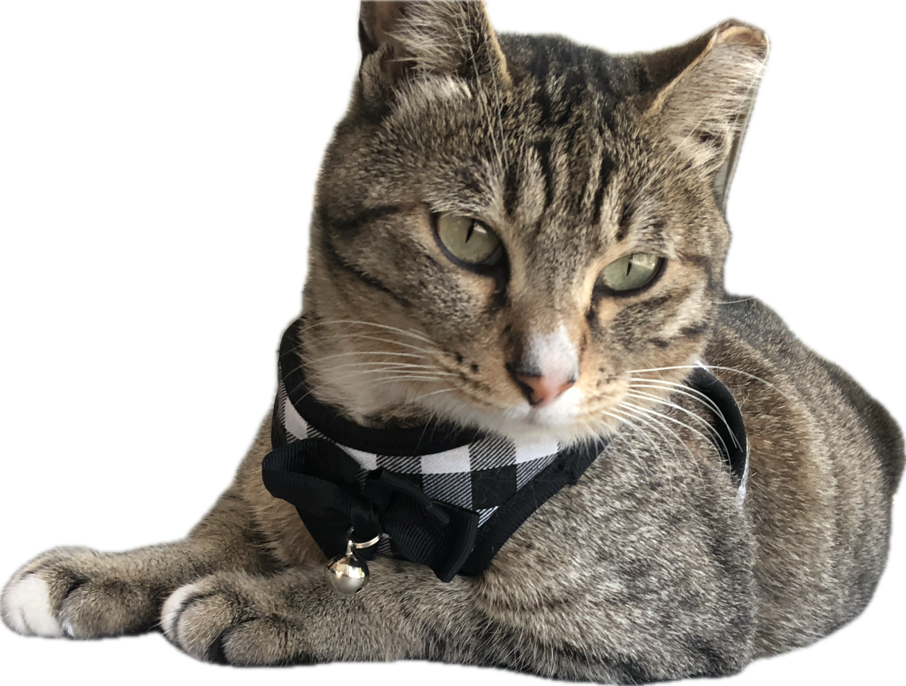
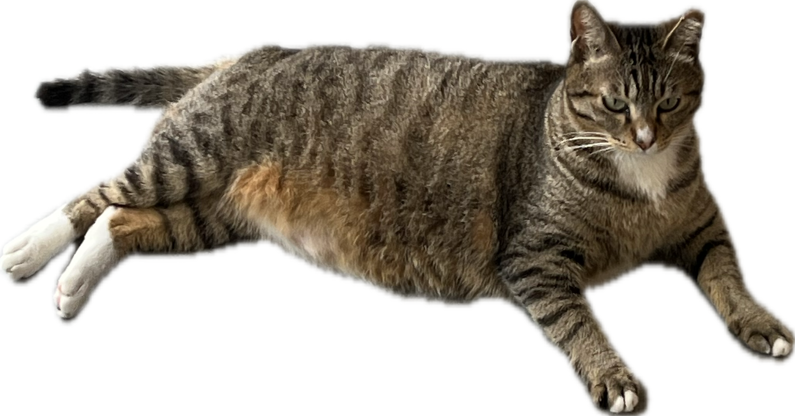
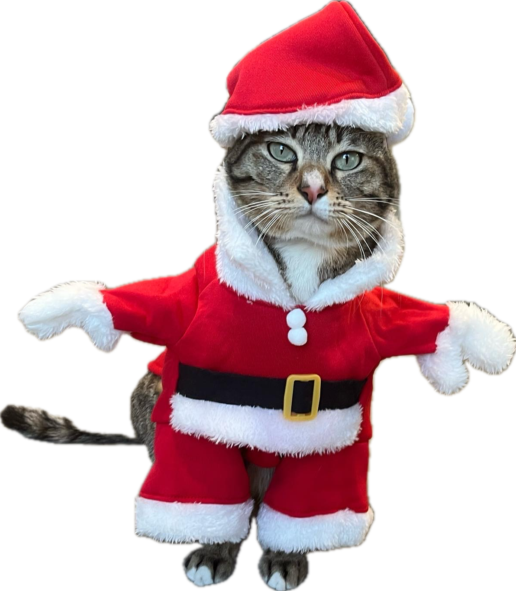

안녕하냐옹! 내이름은 미고
저는 원래 길에서 살던 고양이였어요
매일 일광욕을 하던 곳에 미용실이 생겼더라구요?
문이 열렸길래 들어가서 거울도 보고 둘러보고
나왔어요
다음날엔 조금 더 안 쪽까지 들어갔는데 따뜻하고 좋았어요
그래서 저는 이 곳에 눌러 앉기로 결심했고 벌써 2년이란 시간이 흘렀어요

 미고는 스트리트 출신으로 약 2살 추정이예요
미고는 스트리트 출신으로 약 2살 추정이예요
이름은 미용실고양이를 줄여서 지었어요.
애교가 많아서 원래도 동네분들이 챙겨주었던 것 같아요
사람
손은
탔지만 냥이 서열은 많이 낮았던 것 같아요
길에서 살았기 때문인지 바깥구경을 자주 나가요
그래서 가끔 가출소동이 일어나곤 한답니다
돌아오면 문열라고 문앞에서 시위를 해요


아직 청년기라 그런지 엄청 활발해요
집사가 놀아주지 못한 날은 다리를 깨물고 긁고 난리를 부려요
정작 집사가 귀찮게하면 무시하면서 말이예요